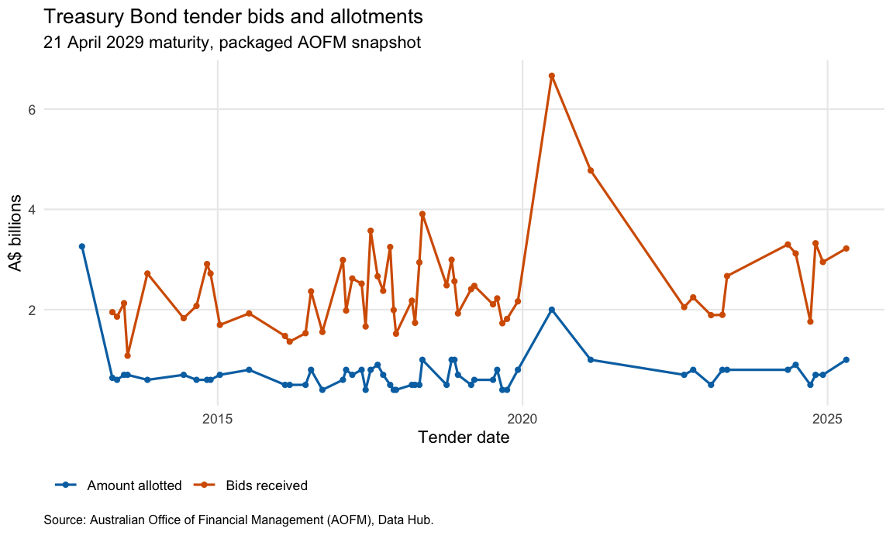

readAOFM gives R users a reproducible path from the Australian Office of Financial Management (AOFM) Data Hub catalogue to tidy, workbook-derived tables. Analysts and researchers can discover and retrieve Australian Government securities data covering issuance, transactions, positions, ownership, turnover, and term-premium series for analysis and reporting.
Installation
Install the current GitHub version with pak:
install.packages("pak")
pak::pak("joel23978/readAOFM")The package is awaiting its first CRAN acceptance. After acceptance, use:
install.packages("readAOFM")Discover an AOFM table
Start with the local catalogue to identify a supported table and obtain its ready-to-run selector. This discovery step is network-free.
catalog <- readAOFM::search_aofm("tb issuance")
catalog[, c("id", "read_call")]
#> id read_call
#> 1 tb_issuance read_aofm("tb", "issuance")The same helper accepts ordinary descriptions:
readAOFM::search_aofm("foreign ownership")
readAOFM::search_aofm("inflation")
readAOFM::search_aofm("secondary market")Retrieve and chart a time series
The catalogue result points to the public retrieval call below. It downloads the current Treasury Bond issuance workbook over HTTPS and runs the package’s transactional parser:
tb_issuance <- readAOFM::read_aofm("tb", "issuance")For a deterministic README and CRAN build, the rendered output below runs that same public dispatcher and parser against the installed tb_issuance.xlsx snapshot. The snapshot is an official AOFM workbook from AOFM media/591; its SHA-256 and provenance are recorded with the packaged snapshots. A normal user call uses the current live workbook instead.
The parsed table is long-form: date_held and maturity are Date columns, name identifies the measure, and numeric observations are in value. This base-R filter selects bids and allotments for a long-running bond maturity and expresses the source values in A$ billions.
measure_labels <- c(
amount_allotted = "Amount allotted",
amount_of_bids = "Bids received"
)
tender_series <- tb_issuance[
tb_issuance$maturity == as.Date("2029-04-21") &
tb_issuance$name %in% names(measure_labels) &
!is.na(tb_issuance$value),
c("date_held", "maturity", "name", "value")
]
tender_series$measure <- factor(
tender_series$name,
levels = names(measure_labels),
labels = unname(measure_labels)
)
tender_series$value_billions <- tender_series$value / 1e9
tender_series <- tender_series[
order(tender_series$measure, tender_series$date_held),
,
drop = FALSE
]
series_preview <- utils::head(tender_series, 4)
data.frame(
date_held = series_preview$date_held,
measure = as.character(series_preview$measure),
value_billions = sprintf("%.2f", series_preview$value_billions),
stringsAsFactors = FALSE
)
#> date_held measure value_billions
#> 1 2012-10-10 Amount allotted 3.26
#> 2 2013-04-10 Amount allotted 0.64
#> 3 2013-05-08 Amount allotted 0.60
#> 4 2013-06-19 Amount allotted 0.70
if (requireNamespace("ggplot2", quietly = TRUE)) {
tender_plot <- ggplot2::ggplot(
tender_series,
ggplot2::aes(
x = date_held,
y = value_billions,
colour = measure,
group = measure
)
) +
ggplot2::geom_line(linewidth = 0.75) +
ggplot2::geom_point(size = 1.25) +
ggplot2::scale_colour_manual(values = c("#0072B2", "#D55E00")) +
ggplot2::labs(
title = "Treasury Bond tender bids and allotments",
subtitle = "21 April 2029 maturity, packaged AOFM snapshot",
x = "Tender date",
y = "A$ billions",
colour = NULL,
caption = paste(
"Source: Australian Office of Financial Management (AOFM),",
"Data Hub."
)
) +
ggplot2::theme_minimal(base_size = 11) +
ggplot2::theme(
legend.position = "bottom",
legend.justification = "left",
panel.grid.minor = ggplot2::element_blank(),
plot.caption = ggplot2::element_text(hjust = 0, size = 8)
)
tender_plot
}
The Getting Started article expands this workflow and explains the return contract. read_aofm() returns one parsed object for a single match and a named list when selectors match several tables. Start with a specific pair before requesting a whole family.
Supported AOFM data
The current catalogue contains 23 parsed tables. These table IDs are stable catalogue identifiers; the public read_aofm() interface normally uses their security and type selectors.
| AOFM family | Parsed table IDs | Reader and shape |
|---|---|---|
| End-of-financial-year summary | summary |
read_eofy(); one long data frame |
| End-of-month positions |
aggregate_position_dealt, aggregate_position_settlement, tb_position_dealt, tb_position_settlement, tib_position_dealt, tib_position_settlement, tn_position_dealt, tn_position_settlement
|
read_eom(); named list of position data frames |
| Transactional issuance/buybacks |
tb_issuance, tb_buyback, tib_issuance, tib_buyback, tn_issuance, retail, slf
|
read_transactional(); one long data frame |
| Syndication details |
tb_syndication, tib_syndication
|
read_syndication(); one long data frame |
| Ownership |
ownership_public, ownership_nonresident
|
read_ownership(); named list of data frames |
| Secondary-market turnover |
tb_turnover, tib_turnover
|
read_secondary(); one long data frame |
| Term premium | termpremium |
read_premium(); one long data frame |
Common workflows
Select one table or one ownership slice:
tb_issuance <- readAOFM::read_aofm("tb", "issuance")
ownership <- readAOFM::read_aofm("ownership", "nonresident")Omitting type returns all parsed tables for a security. Omitting security and specifying type returns all matching securities. These calls are live downloads:
tb_tables <- readAOFM::read_aofm("tb")
names(tb_tables)
issuance_tables <- readAOFM::read_aofm(type = "issuance")
names(issuance_tables)Use the local catalogue before downloading:
readAOFM::search_aofm("issuance")
readAOFM::search_aofm("treasury bond")Most parsed frames are long, retain source identifiers, and expose name and value measurement columns. Dates handled by a reader are returned as Date objects. Inspect the actual workbook-derived columns before writing analysis code:
EOM and ownership readers return named lists; inspect both levels with names(result) and names(result[[1]]).
CSV and raw workbook output
csv = TRUE keeps returning the parsed object and additionally writes under output/ relative to the current working directory. The download_aofm_xlsx() helper saves raw workbooks under data/ and prints selected table IDs.
# Run in a project directory where writing is intentional:
# x <- readAOFM::read_aofm("tb", "issuance", csv = TRUE)
# file.exists(file.path("output", "tb_issuance.csv"))
# readAOFM::download_aofm_xlsx("tb", "issuance")
# file.exists(file.path("data", "tb_issuance.xlsx"))Transactional, syndication, secondary, and premium readers use output/<table-id>.csv; EOFY, EOM, and ownership readers may write one file per workbook sheet.
Retrieval and reproducibility
-
search_aofm(query)withread = FALSEis local and network-free. - Readers and
search_aofm(..., read = TRUE)fetch public AOFM workbooks over HTTPS. - Downloads use a 15-second connection timeout, a 120-second transfer limit, a low-speed abort after 30 seconds below 1 KiB/s, and a 100 MiB file limit.
- Public AOFM workbooks are available without a package username, password, or API key.
- Readers stage each workbook in a temporary file and fetch the current source on each call; repeating a read can therefore return a newer workbook.
-
csv = TRUEwrites tooutput/anddownload_aofm_xlsx()writes todata/relative to the current working directory.
Scope and limitations
The parser-supported catalogue contains the 23 tables listed above. Seven additional catalogue entries are available only through raw workbook download: tb_issuance_conversion, indexation_factors, rmbs_transactions, rmbs_auctions, interest_rate_swaps, cross_currency_swaps, and portfolio_overview. Their selector fields are empty, so an unfiltered download_aofm_xlsx() call is the available route and also selects the rest of the catalogue. search_aofm() excludes these entries from its supported rows; its fallback token matching can still return a supported row for a query that contains a raw-only ID, so use the IDs shown in the returned result.
AOFM controls the source URLs and workbook layouts. Changed URLs, an HTML error page, network failure, or changed sheets/columns can make a read fail. The package validates HTTP responses, workbook signatures, sheet counts, and required columns and reports the table context.
Public readers focus on catalogue-selected AOFM sources; they do not accept a local workbook path. Identifier columns follow each workbook family and can differ across sources. Live reads represent the current AOFM workbook rather than a versioned data snapshot, while the five packaged snapshots provide fixed inputs for documentation and tests.
| Symptom | What to check |
|---|---|
| No supported table matched | Use search_aofm() and its generated read_call. |
| Download or HTTP error | Check network, proxy, and SSL access to AOFM, then retry. |
| HTML or invalid-workbook error | The source may have redirected or returned an error page instead of an Excel workbook; report the table ID and URL if it persists. |
| Missing sheet or required-column error | AOFM may have changed the workbook layout; report the table ID, error, and access date. |
Cannot create data/ or output/
|
Use a writable project directory, or leave csv = FALSE and avoid raw downloads. |
Citation, licensing, and attribution
Package code and documentation are released under the MIT license and are copyright Joel F; see LICENSE. Use citation("readAOFM") for the package citation. The package author and maintainer is Joel F.
Data are sourced from the AOFM Data Hub. Follow the AOFM’s current copyright and licence terms, including attribution requirements and exclusions for third-party material. Identify the Australian Office of Financial Management and the AOFM Data Hub in downstream work and do not imply AOFM endorsement. readAOFM is independent and is not affiliated with or endorsed by AOFM.
Contributing and reporting issues
Please report reproducible parser failures, changed AOFM workbook layouts, or documentation problems through the GitHub issue tracker. Pull requests can be proposed through the repository’s pull-request page; detailed development guidance is in CONTRIBUTING.md at the repository root.